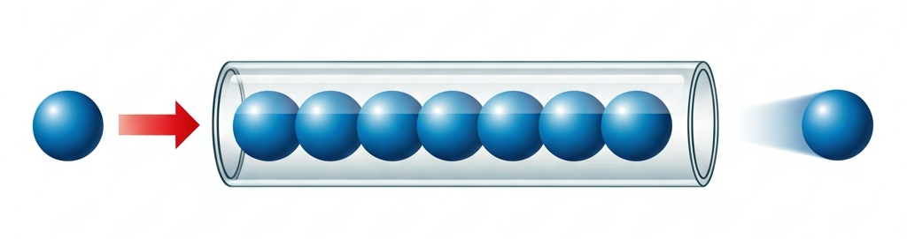
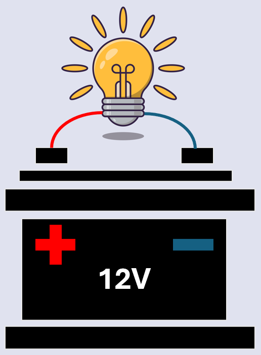
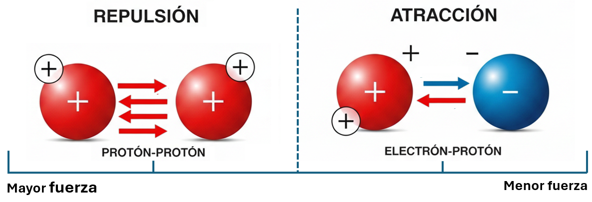
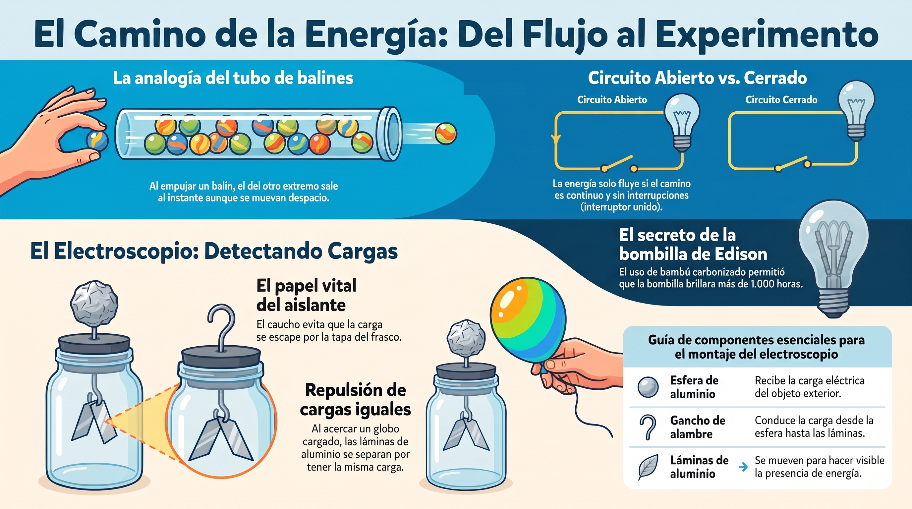

🔌 El camino de la energía
🟡 ¿Cómo se mueve la energía?
Imagina un tubo de plástico transparente completamente lleno de balines. Si empujas un balín con el pulgar en la entrada del tubo, inmediatamente sale un balín por el otro extremo.

💡 Idea clave: la fuerza del empuje se siente al instante en todo el tubo, aunque los balines individuales dentro se muevan muy despacio.
🚪 Circuito abierto vs. circuito cerrado
Para que los balines se muevan y transmitan energía, necesitan un camino continuo sin interrupciones.
- Circuito cerrado (pasa): el camino está completo. El interruptor une los cables y la energía fluye.
- Circuito abierto (no pasa): el camino se rompe. El interruptor crea un hueco y la energía se detiene.

📝 Trabajo en bitácora
En tu bitácora de clase, realiza la siguiente actividad:
- Dibuja el "Circuito Humano": tus compañeros tomados de las manos formando un círculo.
- Marca con rojo el punto donde el interruptor se abre (cuando dos compañeros se sueltan).
- Clasifica las imágenes respondiendo: ¿Pasa o no pasa energía?
🔬 Taller de Cargas: Construye tu propio electroscopio
La energía eléctrica tiene una protagonista invisible: la carga. Vamos a hacerla visible con un instrumento muy sencillo.

🧰 Materiales
- Frasco de vidrio transparente y seco, con tapa.
- Alambre de cobre grueso o clip metálico estirado.
- Un trozo pequeño de caucho, goma o corcho para hacer el aislante.
- Papel aluminio.
- Un globo o tubo de plástico.
🛠️ Construcción paso a paso
Observa el diagrama: cada parte del electroscopio tiene una función. Fíjate especialmente en dos piezas clave: el aislante de caucho y el gancho del alambre.
- Haz un orificio en el centro de la tapa.
- Coloca el aislante de caucho alrededor del alambre, justo donde va a atravesar la tapa. Sin él, la carga se escaparía por la tapa y el electroscopio no funcionaría.
- Atraviesa el alambre (ya con el aislante) por el orificio de la tapa: una punta afuera, otra dentro del frasco.
- Con la punta de adentro del alambre, forma un pequeño gancho.
- En la punta de afuera, pon una esfera pequeña de aluminio.
- Del gancho, cuelga dos láminas delgadas de aluminio, una al lado de la otra, sin que se toquen.
- Cierra el frasco.
🔍 El experimento
- Frota el globo contra tu cabello durante unos segundos.
- Acércalo (sin tocar) a la esfera de aluminio.
- Observa: las láminas de adentro se separan.
- Aleja el globo: las láminas vuelven a juntarse.

❓ Pregunta guía
¿Por qué se separan las láminas si el globo no las toca? Dibuja lo que crees que pasa y compártelo con tu grupo.
📜 Edison y la bombilla que duró 1.000 horas
En 1879, Thomas Edison no inventó la primera bombilla del mundo: ya había diseños previos en Inglaterra y Rusia. Pero él logró algo distinto: construir un sistema completo para iluminar ciudades enteras.
Su equipo probó miles de materiales para el filamento de la bombilla. Finalmente encontró uno que brillaba por más de 1.000 horas sin quemarse: el bambú carbonizado de Kioto, Japón. Fue un hallazgo que conectó el ingenio de dos continentes.
Fuente: archivo de aula "El éxito comercial y práctico de Thomas Alva Edison".🗺️ Repaso visual

El empuje de la energía
Dale play y en menos de 5 minutos descubrirás:
- 🟡 El tubo de balines: ¿por qué la corriente se siente al instante si los electrones se mueven a paso de caracol?
- 🤝 El circuito humano: qué pasa cuando el camino de la energía se rompe.
- ⚡ El truco del electroscopio: por qué se separan las láminas de aluminio sin que nadie las toque.
- 🎋 El secreto de Edison: el bambú japonés que iluminó al mundo.
💡 Escúchalo en familia y comenta lo que más te sorprendió.